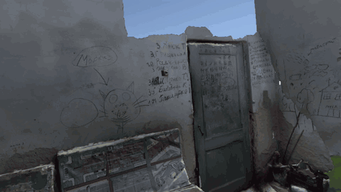

Projects / Research
Gaze in Immersive Archives
Eye tracking for presenting information in, and studying how people view, VR archives

The Watanave Lab at the University of Tokyo builds immersive archives such as War Damage VR, which reconstructs damaged areas in Ukraine from 3D scans. In these scenes the sense of being in the place is central to the experience. Captions placed on separate panels or laid over the view split the viewer's attention and can pull them out of the scene. This project, with Shohei Komatsu and Prof. Hidenori Watanave, uses the eye tracker built into a VR headset in two ways: to show information when the viewer is looking for it, and to measure how people actually look at exhibits.
Floating Captions (ETRA 2025) places small gaze points in the scene and shows a caption only after the viewer has looked at one for a set dwell time, so that fewer captions are on screen at once. The ETRA 2026 short paper then asked what besides dwell time goes along with sustained viewing. It analysed head motion, gaze dynamics and pupil size recorded while 20 participants freely explored a VR museum.
A related study led by Komatsu (HAI 2025) used a head-mounted display as a controlled eye-tracking platform to examine how a 3D avatar pointing at regions of historical photographs changes where and when viewers look.
Structure
-
01
Floating Captions
Gaze-triggered captions for VR exhibits (ETRA 2025)
A caption system for VR exhibits, built in Unity on a PICO 4 Enterprise headset with eye tracking. Small circular gaze points sit in the exhibit space, sized to their objects, and a caption appears only after the viewer holds their gaze on one for a set time; 750 ms was chosen conservatively to avoid accidental triggers. The demonstration had two scenes: 3D-scanned items from the Matsudo City Museum, and War Damage VR, an immersive record of damaged areas in Ukraine.

Demo: captions surface where the viewer's gaze rests (戦災VR content). - 2025.05Late-Breaking WorkFloating Captions: Eyetracking-based Context-aware Captioning System for Immersive VR ContentsKosuke Shimizu, Shohei Komatsu, Hidenori WatanaveETRA 2025 LBW Track, pp. 1–3 · DOI 10.1145/3715669.3726816
-
02
Sustained Viewing
Head, gaze and pupil markers of sustained viewing in a VR museum (ETRA 2026)
This study looked for signals beyond dwell time that go along with sustained viewing. Twenty participants freely explored a VR museum while gaze, pupil diameter and 6DoF head motion were recorded, and 758 viewing episodes were reviewed with retrospective think-aloud data. Slower head rotation was associated with longer dwell time. In episodes over three seconds, gaze converged on a narrower region while spreading more evenly within it. Pupil dilation just after gaze onset was larger in long episodes, a result the paper treats as exploratory.
- 2026.05Short PaperBehavioral Markers of Sustained Viewing in VR Museum Exploration: Head Stability, Gaze Dynamics, and Pupillary ResponseKosuke Shimizu, Shohei Komatsu, Hidenori WatanaveETRA 2026 Short Paper Track, pp. 1–6 · DOI 10.1145/3797246.3803054